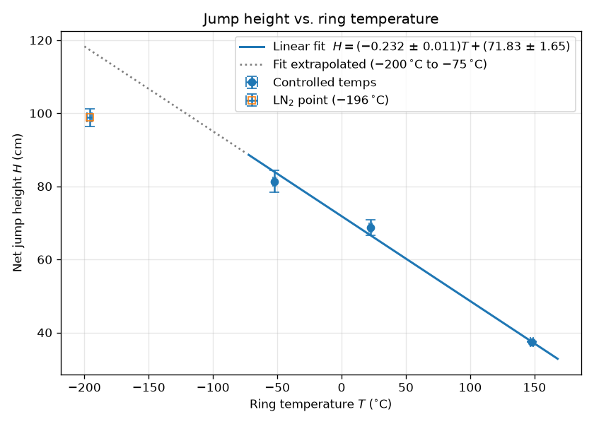

Jumping Ring: Height Against Temperature
PHYS 20CL final project. I measured how high a ring jumps off a Thomson coil at four ring temperatures between −196 °C and 148 °C. The colder the ring, the higher it jumped.
Franck-Hertz Experiment
I accelerated electrons through mercury vapor and found dips in the current about every 5 V, which gives a first excitation energy of 5.03 eV.
Speed of Sound
I timed sound arriving at a microphone at five distances on an oscilloscope. A weighted linear fit gave 341.0 ± 0.6 m/s.

Laplace’s Equation by Relaxation
PHYS 129L. I solved for the electric potential around two parallel plates on a grid by iterative relaxation.

Monte Carlo Integration
PHYS 129L. I compared Monte Carlo sampling with a Riemann sum on the same integral and estimated $\pi$ from random points, checking how the error falls with $N$.

Counting Statistics and Hypothesis Testing
PHYS 129L. A simulated photon-counting experiment, and a hypothesis test that compares the exact binomial probability with its Gaussian approximation.
Time Series and Spectral Analysis
Fitting the decay of an RLC circuit in the time domain, and the power spectrum of a solar-cell voltage signal with the FFT.
scrooge
Turns PDFs into text with local OCR (Tesseract) and digitizes plots into data, served to AI agents through an MCP server.
Three Apps on the App Store
Tomatime is a focus timer for Mac, iPhone and Apple Watch. Doomblock blocks doomscrolling. Decant is a social filter.
survey-gate
A survey-gated download page for PHYS 23 practice exams. I used it to collect the student responses for my PHYS 180 study.
Inventory Verification System
PHYS 129L final project. A Python system for a Raspberry Pi and a barcode scanner that checks scanned items against each order, written for Maison de Celine, the retailer in Busan where I worked in 2024.